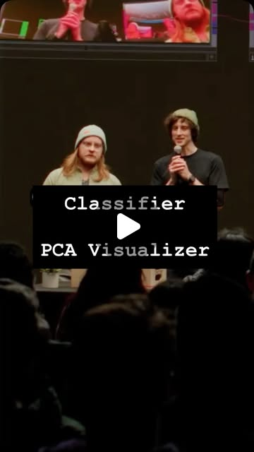
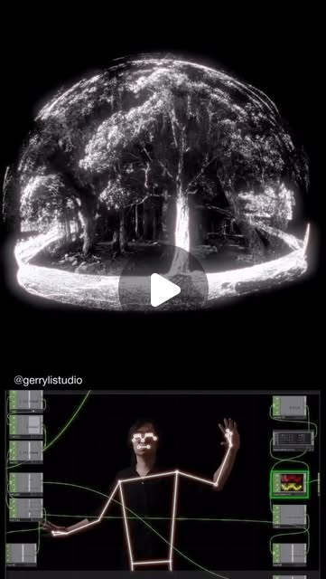
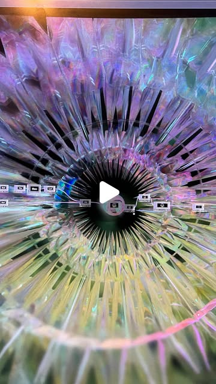
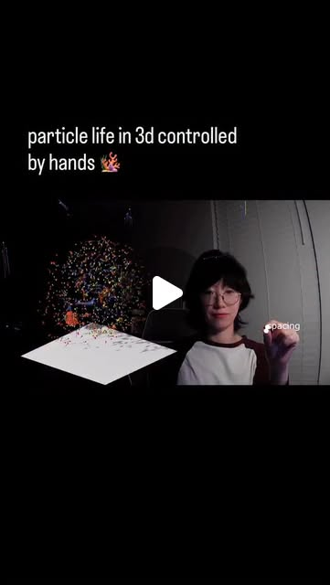

creative_fusion
MediaPipe × TouchDesigner: Real-Time Body-to-Art Pipeline
MediaPipe's body/hand/face tracking combined with TouchDesigner's node-based visual programming creates a real-time pipeline where human movement becomes generative art. Multiple creators are independently converging on this stack — from spider-web string simulations to 3D Gaussian splatting to interactive music visualizers.
Claude · Gemini · Kinect · Kling · MediaPipe · Pika · Runway · Sora · TouchDesigner · Unreal Engine
Try It — Action Sketch
1. Install TouchDesigner + MediaPipe Python bindings 2. Set up basic hand landmark tracking (21 points per hand) 3. Pipe landmark data into TouchDesigner via OSC or shared memory 4. Build a simple particle system that responds to hand position 5. Layer in face mesh (468 landmarks) for expression-reactive visuals 6. Export as standalone for installations or stream via NDI
Prerequisites: TouchDesigner (free learning edition), Webcam, MediaPipe Python or JS SDK, Basic understanding of node-based visual programming
Connected Posts (10)

MediaPipe — What if Spiders Wove with Strings?🕷️
🧱 2026/04/09 — @pepepepebrick; uses MediaPipe, TouchDesigner.

Claude — Also, happy 100 posts to me! Woohoo!!!
“Claude can do this in 10 minutes!” Is a caption I see a LOT rn and I definitely have mixed feelings about it. On one... — @ojrgb; uses Claude, MediaPipe, TouchDesigner.

MediaPipe — Download free at
Torin & Lyell demo Classifier & PCA visualization TOXs live at DATLAB XIII 12/2025. TouchDesigner plugins for trainin... — @zerospacelabs; uses MediaPipe, TouchDesigner.

Gemini — if you want to listen leave a comment and i can send a link! ♡
testing my new mic by talking about the presentation i had at @datlabnyc about the relationship i see between math eq... — @as.ws__; uses Gemini, Kling, Pika.

MediaPipe — Ongoing R&D at the intersection of art and technology. not a finished...
repost @gerrylistudio How does presence reshape what we remember? — @touchdesigner; uses MediaPipe, TouchDesigner.

MediaPipe TouchDesigner plugin by @blankensmithing
@neles0n trying the MediaPipe plugin by @blankensmithing inside TouchDesigner. Useful pointer for anyone doing body/hand tracking in TD creative-coding pipelines.

DATA CONTROL — Kinect + TouchDesigner + Unreal scientific viz
@pala3d's 'DATA CONTROL' project: real-time visualization of NASA/CERN datasets as particle systems, body-controlled via Kinect through TouchDesigner into Unreal Engine. Pipeline explicitly human-made, no AI. Reference for data-viz/creative-coding stack.

TouchDesigner Creative Coding — 3D scanning, MediaPipe, Gaussian splats
Sources: @the.poet.engineer, @_sashasokolov | Three techniques: 3D scanning with virtual cameras (Polycam), MediaPipe body tracking for interactive dance art, and Gaussian splats for photorealistic 3D scenes. Includes setup, key concepts, and resources. | TouchDesigner

TouchDesigner — I made this iridescent alien creature using POPS; the mesh was made with...
Biblically accurate alien // Motion sensor in realtime @pipo_interfaces - what an intuitive and fun little tool 🤲 bui... — @Edited; uses TouchDesigner.

TouchDesigner — - adjust spacing of all particles
particle life in 3d controlled by hands 🪸 — @the.poet.engineer; uses TouchDesigner.
Deeper Dive generated 2026-07-08T13:11:57.078054 · Curated by Claude for Gabe (@6ab3) · dejaviewed.com